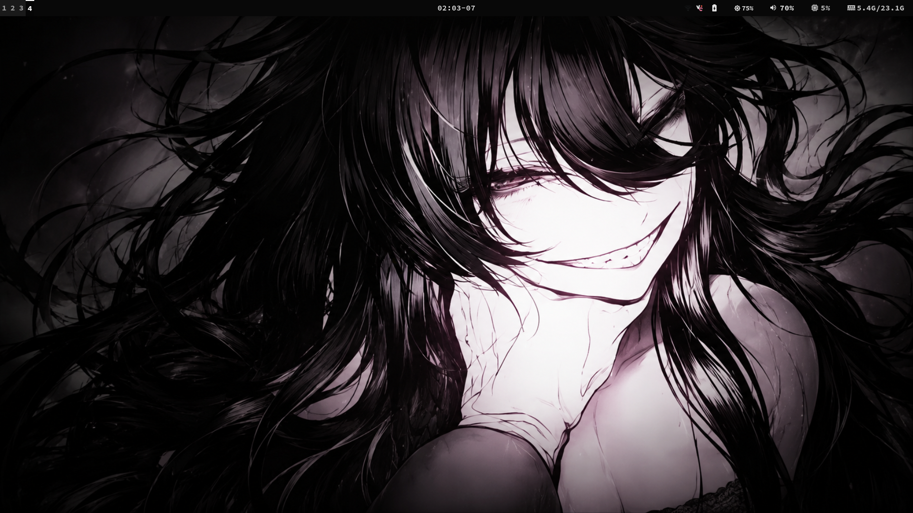
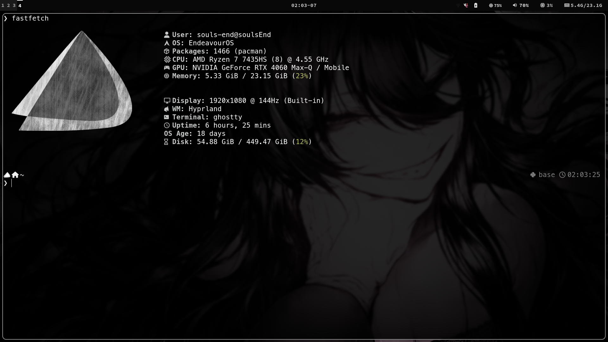
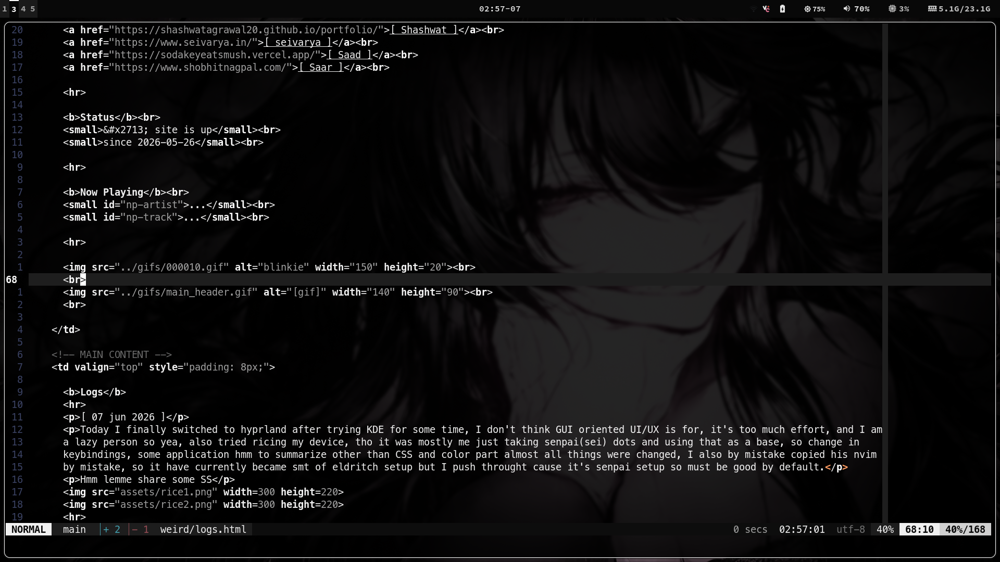

[ 07 jun 2026 ]
Today I finally switched to hyprland after trying KDE for some time, I don't think GUI oriented UI/UX is for, it's too much effort, and I am a lazy person so yea, also tried ricing my device, tho it was mostly me just taking senpai(sei) dots and using that as a base, so change in keybindings, some application hmm to summarize other than CSS and color part almost all things were changed, I also by mistake copied his nvim by mistake, so it have currently became smt of eldritch setup but I push throught cause it's senpai setup so must be good by default.
Hmm lemme share some SS



Senpai nvim config is very sassy tho, it scolds me when i use arrow key mou~
[ 26 may 2026 ]
Today i worked on my portfolio website finalising it's style and pages, ohh and i did a clever thing today, counting the number of visitors on website was hard and 3rd party thigies were not working so, i hosted a simple api on vercel so now whenver page is visited a counter goes up there and is persistent and we fetch it here huehuehue. aren't i a genius, praise me.